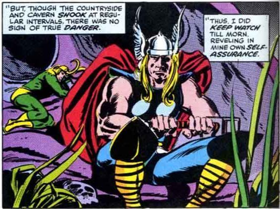

Loki
The webmaster is still trying to figure out how to build a proper shrine at the moment.
In the mean time, please enjoy these marvel memes.



The webmaster is still trying to figure out how to build a proper shrine at the moment.
In the mean time, please enjoy these marvel memes.
